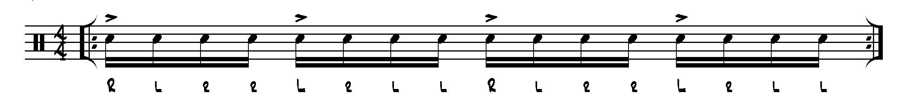

Rudiments
As the name suggests, learning rudiments will give you a foundational level of technique at the drums. Practicing these cool sticking combinations and working them up to speed is a sure fire way to get those blazing fast chops you've always wanted.
- Double Strokes
- Paradiddles 
- Flams